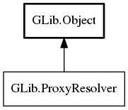

ProxyResolver
Object Hierarchy:
Description:
ProxyResolver provides synchronous and asynchronous network proxy resolution.
ProxyResolver is used within SocketClient through the method proxy_enumerate.
All known implementing classes:

Namespace: GLib
Package: gio-2.0
Content:
Static methods:
Methods:
Inherited Members:
All known members inherited from class GLib.Object